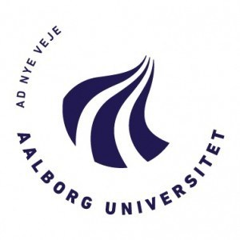

Aalborg University, Denmark 
Assistant Professor
2017 - Present
Research Assistant
2016 - 2017
Education
PhD in Economics
2013 - 2016
University of Limerick, Ireland 
Visiting PhD
2013 - 2016
University of Iceland, Iceland 
Masters in Econometrics
2010 - 2013
Stockholm University, Sweden 
Research Interests
Macroeconomics, International economics, Financial economics, Econometrics, Machine Learning, Data science
Journal articles peer reviewed
-
Capital inflows, crisis and recovery in small open economies (with Gylfi Zoega and Stephen Kinsella), Finance Research
Letters, 2018
-
Quantile Dependence between the Stock, Bond and Foreign Exchange Markets - Evidence from the UK (with Weiou Wu),
Quarterly Review of Economics and Finance, 2018
-
Macroeconomic effects of unemployment benefits in small open economies: A Stock– Flow–Consistent approach” (with
Mikael Byrialsen), European Journal of Economics and Economic Policies: Intervention, 2018
-
Testing for asymmetry in the Feldstein–Horioka equation (with Gylfi Zoega and Stephen Kinsella), Journal of International
Trade and Economic Development, 2018
-
Exploring the link between household debt and inequality: an asymmetric approach (with Apostolos Fasianos and Stephen
Kinsella), Applied Economics Letters, 24(6), 404–409, 2017
-
Two Thorns of Experience: Financialisation in Iceland and Ireland (with Stephen Kinsella, Bjorn Gudmundsson and Gylfi
Zoega), International Review of Applied Economics, 30(6), 771–789, 2016
-
“Exploring the effects of capital mobility on the investment saving nexus: Evidence from Icelandic historical data” (with
Gylfi Zoega and Stephen Kinsella), Scandinavian Economic History Review
(revise and resubmit).
-
“Crises and capital controls in small open economies: A Stock-Flow Consistent (SFC) approach” (with Gylfi Zoega, Bjorn Gudmundsson,
and Mikael Byrialsen), European Journal of Economics and Economic Policies: Intervention
(Forthcoming).
-
“Does securitisation make monetary policy less effective?” (with Jalal Qanas),
2018
(under review).
Work in progress
-
“Financialisation and business cycle asymmetries".
-
“Investigating the macroeconomic effects of unemployment benefits: A panel VAR approach.
-
“An empirical Stock-Flow Consistent (SFC) model of the Danish economy".
Book chapters
-
“A post-Keynesian model of the balance of payments crisis" (with Bjorn Gudmundsson, Gylfi Zoega, Mikael Byrialsen), Progressive
Post-Keynesian Economics: Dealing with reality, Edward Elgar, 2018 (Forthcoming).
Economic Journalism
“Currency is not destiny” (with Stephen Kinsella and Gylfi Zoega), VoxEU, July 4th, 2015.
Refereeing
Empirical economics, European Journal of Economics and Economic Policies: Intervention
Conferences and Seminars
Co-organiser
-
Fourth Nordic Post-Keynesian Conference, 2017, Aalborg University, Denmark.
-
Annual conference of “Irish Economic Association”, 2014, University of Limerick, Ireland.
- Winter School, titled: “Stock-Flow Consistent and Agent Based Models", 2014, University of Limerick, Ireland.
Presenter/Participant
-
21st FMM Conference: The Crisis of Globalisation, 2017, Berlin, Germany.
-
Festival for New Economic Thinking, 2017, Edinburgh, Scotland.
-
Fourth Nordic Post-Keynesian Conference, 2017, Aalborg, Denmark.
-
Central Bank of Iceland, 2015, Iceland.
-
7th Post–Keynesian Conference, 2015, University of Greenwich, UK.
-
University of Iceland, 2013, Iceland.
-
Participant: Minsky Summer Seminar 2014, Levy Institute of Bard College, New York, USA.
Teaching Experience
Aalborg University, Denmark
Lecturer
| Financial Instability and Crises (Masters - 10 ECTS) |
Autumn (2016, 2017) |
| Advanced macroeconomics (Masters - 10 ECTS) |
Spring, Autumn (2017) |
| Economic Modelling I and II (Bachelors/Masters - 5/10 ECTS) |
Spring (2017, 2018) |
| Econometrics (Bachelors - 10 ECTS) |
Autumn 2017 |
| Statistics (Bachelors - 5/10 ECTS) |
Spring 2018 |
University of Limerick, Ireland
Teaching Assistant
|
Econometrics (Masters)
|
Spring 2016
|
|
Financial Economics (Bachelors)
|
Autumn 2015
|
|
Econometrics (Bachelors)
|
Autumn 2014
|
|
Macroeconomics (Bachelors)
|
Spring 2014
|
University of Iceland, Iceland
Guest Lecturer
|
How to build a Stock–Flow–Consistent model?
|
Nov, 2015
|
Supervision
Master theses, Bachelors theses, Semester projects
Computer skills
R, STATA, Eviews, Microfit, Latex, HTML, CSS
Languages
English (fluent), Danish (intermediate), Swedish (intermediate), Urdu (fluent), Pashto (native)
References
Dr. Stephen Kinsella
Senior Lecturer in Economics
Kemmy Business School
University of Limerick
Phone: +353 857 24 69 50
Email: stephen.kinsella@ul.ie
Website: www.stephenkinsella.net
|
Prof. Gylfi Zoega
Professor in Economics
Department of Economics
University of Iceland
Phone: +354 525 52 39
Email: gz@hi.is
|